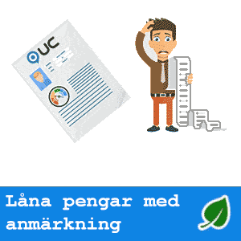

Att få låna pengar utan kreditupplysning är ett önskemål hos många konsumenter. Genom att göra en mjuk [osynlig] kreditupplysning utan att använda UC kan flera långivare leverera den servicen.
En låntagare hämtar alltid in viss information om en ny kund. Att få ett lån utan att långivaren har en susning om vilken möjlighet kunden har att betala lånet finns helt enkelt inte.
Långivaren med högst beviljandegrad (exempelränta 39.5 %) för april 2025 är Viaconto
Med ett lån utan kreditkontroll registreras inte långivarens upplysning och påverkar därför inte kreditpoängen. Att ta en ”mjuk” upplysning som inte registreras är vanligt hos långivare som erbjuder lån med hög ränta.
Alla legitima långivare i Sverige måste göra en kreditkontroll på nya kunder. Detta är ett oundvikligt faktum som du måste komma överens med innan du fortsätter. Däremot finns det långivare som gör en osynlig så kallad mjuk kreditkontroll som inte blir offentlig. En mjuk kreditupplysning/förfrågan kommer inte att skada din kreditvärdighet alls. Du är den enda som kommer att kunna se detta på din kreditupplysning.
Du kan få allt från en månad till nästan ett år för att betala tillbaka de pengar du lånade med ett lån utan kreditkontroll.
Du kan få ett lån utan kreditkontroll från ett onlinebaserat privatlåneföretag. Ansökningsprocessen sker online via företagets hemsida. Detta är bland de många anledningarna till att denna typ av lån är ett bekvämt alternativ för låntagare.
Innan du kan avgöra vilken typ av ränta du sannolikt kommer att få med ditt lån måste du överväga några viktiga faktorer. Detta inkluderar din kreditvärdighet, inkomst och till och med jobbhistorik. En långivare kommer att titta på alla dessa saker innan han bestämmer sig för din ränta. Du kan få lägsta möjliga pris genom att jämföra olika erbjudanden online.
Lånesökare som lider av svag kreditvärdighet och behöver ett omedelbart lån kan ta beslutet att ansöka med dessa finanser. Dessa finanser är speciellt utformade för att de sökande ska kunna erbjuda snabb ekonomisk hjälp som inte registreras i allmänna kreditregister.
En långivare utan kreditkontroll som granskar åtminstone en del av din ekonomiska information är ett säkrare val än en som lånar ut pengar utan några frågor.
Topplista lån utan kreditupplysning
Topplista för rekommenderade och utvalda lån utan kreditupplysning 2024. För hjälp att få okomplicerat lån utan kreditupplysning med hög servicenivå tipsar vi om följande:
Banky – Utgår från din förmåga – Lånet betalas ut inom 24h
Brixo – Hur mycket vill du låna? – Utbetalning samma dag som ansökan beviljas
Ferratum – Mer än pengar till alla – Direktutbetalning till de fyra storbankerna.
GFMoney – Flexibel kontokredit – Fem minuter med konto i storbank.
SMSPengar – Sms-lån hos Smspengar – Direktutbetalningar 24/7
Extralånet – Ett bra extra lån åt alla – Utbetalning samma dag
Viaconto – Introducerar nya lånemöjligheter – Vardagar samma dag.
Nätlån – Låna pengar snabbt och säkert – Inom 1-2 dagar
Binly – När du behöver det!
– Direkt - dygnet runt
Lumify – Direktutbetalningar 24/7 alla dagar – Direktutbetalningar 24/7
Krediten har inga avgifter. Krediten har inga avgifter. Rörlig nominell årsränta är 28,95 % och den effektiva räntan är 33,1 %. En exempelkredit på 10 000 kr som återbetalas med 970 kr per månad under 12 månader har en total kostnad om 1 640 kr. Löptid från 6 till 52 månader vid maximalt initialt uttag, lägsta möjliga månadsvisa återbetalning och inga ytterligare uttag.
Utnyttjad kredit om 25 000 kr i 12 månader, totalt belopp att återbetala 30 890 kr (snitt 2 574 kr per månad). Effektiv årsränta: 53 %. Kontokredit med variabel nominell årsränta på 44 %. Övriga avgifter: Uppläggningsavgift 0 kr.
Lånexempel (2024-01-16):
Utnyttjad kredit om 15 000 kr i 12 månader, totalt att återbetala 19 725 kr (snitt 1 644 kr per månad). Effektiv årsränta: 71.04%. Kontokredit med rörlig nominell årsränta på 44.00%. Avgifter: Uppläggningsavgift 280 kr. Uttagsavgift 95 kr. Månadsavgift: 45 kr. Lånexemplet förutsätter ett uttag med avgift, en uppläggningsavgift samt 12 månadsavgifter.
Utnyttjad kredit om 15 000 kr i 12 månader, totalt att återbetala 19 725 kr (snitt 1 644 kr per månad). Effektiv årsränta: 71.04%. Kontokredit med rörlig nominell årsränta på 44.00%. Avgifter: Uppläggningsavgift 280 kr. Uttagsavgift 95 kr. Avi/Månadsavgift: 45 kr. Lånexemplet förutsätter ett uttag med avgift, en uppläggningsavgift samt 12 avi/månadsavgifter.
30 000 kr i annuitetslån på 4 år med 27,95% nominell ränta, 31,82% effektiv ränta, kostar 1 045 kr/mån (48 ggr). Att återbetala: 50 160 kr inkl. alla avgifter.
Ett lån på 6 000 kronor till 39.5 procents bunden ränta med en
återbetalningstid på en månad, med ett betalnig om 196 kronor i ränta och
380 kronor i uppläggningsavgift samt 45 kronor i aviavgift ger en
effektiv ränta på totalt 261.1 procent. Totalt att återbetala blir 6621
kronor.
30 000 kr i annuitetslån på 4 år med 27,95% nominell ränta, 31,82% effektiv ränta, kostar 1 045 kr/mån (48 ggr). Att återbetala: 50 160 kr inkl. alla avgifter.
En kredit på 9 500 kr till 42,50 % ränta med en återbetalningstid på tio månader (med tio återbetalningar om 1 910 kr, 1 576 kr, 1 536 kr, 1 496 kr, 1 456 kr, 1 415 kr, 1 375 kr, 1 335 kr, 1 294 kr samt 1 254 kr) och 1 205 kr i uppläggningsavgift, 1 155 kr i Lägst att betala-belopp samt 600 kr i aviavgifter ger en effektiv ränta på totalt 198,86 %. Det totala beloppet att återbetala är 14 648 kr.
En kredit på 9 500 kr till 44,00 % ränta med en återbetalningstid på tio månader (med tio återbetalningar om 1 880 kr, 1 547 kr, 1 510 kr, 1 473 kr, 1 436 kr, 1 399 kr, 1 362 kr, 1 325 kr, 1 288 kr samt 1 251 kr) och 1 105 kr i uppläggningsavgift, 1 155 kr i Lägst att betala-belopp samt 600 kr i aviavgifter ger en effektiv ränta på totalt 188,16 %. Det totala beloppet att återbetala är 14 670 kr. Kreditens löptid och där tillhörande kostnader kan komma att förändras vid utökning av krediten.
Rekommenderade långivare - lån utan kreditupplysning
Jämförelse av utvalda långivares exempelräntor, kostnad och belopp
För jämförelse av lån utan kreditupplysning tittar vi på lån utan UC och hämtar räntor och kostnader från långivarnas egna exemel på vanliga kreditsituationer.
I tabellen kan vi bland annat se hur stora lån som är vanliga samt vilka fördelar långivaren kan erbjuda.
Scrolla tabellen
Trustpilot
Minbelopp
Maxbelopp
Exempelbelopp
Ränta från
Ränta till
Utbetalning
Startavgift
Aviavgift
Upplysning
Avgiftsfritt
-
20 000 kr
150 000 kr
50 000 kr
29 %
29 %
Lånet betalas ut inom 24h
0 kr
0 kr
Banky lån utan kreditupplysning Fast ränta 29 %
Annuitetslån 5 år. Effektiv årsränta 29,97%. Ett lån på 50 000 kr kostar då 1 512 kr/mån (60 avbetalningar), dvs totalt 83 675 kr. Ingen uppläggningsavgift eller aviavgifter. 26,50% nominell ränta. Räntan är rörlig. Banky samarbetar med Nordiska Kreditmarknadsaktiebolaget.
Brixo lån utan kreditupplysning Fast ränta 19,95 %
Krediten har inga avgifter. Krediten har inga avgifter. Rörlig nominell årsränta är 28,95 % och den effektiva räntan är 33,1 %. En exempelkredit på 10 000 kr som återbetalas med 970 kr per månad under 12 månader har en total kostnad om 1 640 kr. Löptid från 6 till 52 månader vid maximalt initialt uttag, lägsta möjliga månadsvisa återbetalning och inga ytterligare uttag.
Ferratum lån utan kreditupplysning Fast ränta 40,5 %
Utnyttjad kredit om 25 000 kr i 12 månader, totalt belopp att återbetala 30 890 kr (snitt 2 574 kr per månad). Effektiv årsränta: 53 %. Kontokredit med variabel nominell årsränta på 44 %. Övriga avgifter: Uppläggningsavgift 0 kr.
GFMoney lån utan kreditupplysning Fast ränta 39,8 %
Lånexempel (2024-01-16):
Utnyttjad kredit om 15 000 kr i 12 månader, totalt att återbetala 19 725 kr (snitt 1 644 kr per månad). Effektiv årsränta: 71.04%. Kontokredit med rörlig nominell årsränta på 44.00%. Avgifter: Uppläggningsavgift 280 kr. Uttagsavgift 95 kr. Månadsavgift: 45 kr. Lånexemplet förutsätter ett uttag med avgift, en uppläggningsavgift samt 12 månadsavgifter.
SMSPengar lån utan kreditupplysning Fast ränta 39,8 %
Utnyttjad kredit om 15 000 kr i 12 månader, totalt att återbetala 19 725 kr (snitt 1 644 kr per månad). Effektiv årsränta: 71.04%. Kontokredit med rörlig nominell årsränta på 44.00%. Avgifter: Uppläggningsavgift 280 kr. Uttagsavgift 95 kr. Avi/Månadsavgift: 45 kr. Lånexemplet förutsätter ett uttag med avgift, en uppläggningsavgift samt 12 avi/månadsavgifter.
Extralånet lån utan kreditupplysning Fast ränta 24,95 %
30 000 kr i annuitetslån på 4 år med 27,95% nominell ränta, 31,82% effektiv ränta, kostar 1 045 kr/mån (48 ggr). Att återbetala: 50 160 kr inkl. alla avgifter.
Viaconto lån utan kreditupplysning Fast ränta 39,5 %
Ett lån på 6 000 kronor till 39.5 procents bunden ränta med en
återbetalningstid på en månad, med ett betalnig om 196 kronor i ränta och
380 kronor i uppläggningsavgift samt 45 kronor i aviavgift ger en
effektiv ränta på totalt 261.1 procent. Totalt att återbetala blir 6621
kronor.
Nätlån lån utan kreditupplysning Fast ränta 27,95 %
30 000 kr i annuitetslån på 4 år med 27,95% nominell ränta, 31,82% effektiv ränta, kostar 1 045 kr/mån (48 ggr). Att återbetala: 50 160 kr inkl. alla avgifter.
En kredit på 9 500 kr till 42,50 % ränta med en återbetalningstid på tio månader (med tio återbetalningar om 1 910 kr, 1 576 kr, 1 536 kr, 1 496 kr, 1 456 kr, 1 415 kr, 1 375 kr, 1 335 kr, 1 294 kr samt 1 254 kr) och 1 205 kr i uppläggningsavgift, 1 155 kr i Lägst att betala-belopp samt 600 kr i aviavgifter ger en effektiv ränta på totalt 198,86 %. Det totala beloppet att återbetala är 14 648 kr.
Lumify lån utan kreditupplysning Fast ränta 40,25 %
En kredit på 9 500 kr till 44,00 % ränta med en återbetalningstid på tio månader (med tio återbetalningar om 1 880 kr, 1 547 kr, 1 510 kr, 1 473 kr, 1 436 kr, 1 399 kr, 1 362 kr, 1 325 kr, 1 288 kr samt 1 251 kr) och 1 105 kr i uppläggningsavgift, 1 155 kr i Lägst att betala-belopp samt 600 kr i aviavgifter ger en effektiv ränta på totalt 188,16 %. Det totala beloppet att återbetala är 14 670 kr. Kreditens löptid och där tillhörande kostnader kan komma att förändras vid utökning av krediten.
[april 2025]
Statistik (antal lån utan kreditupplysning)
Utvalda lån
10
Lägsta belopp
1 000 Kr
Högsta belopp
150 000 Kr
Snitt exempelbelopp
20 000 Kr
Lägst ränta
20,0 %
Högst ränta
40,5 %
Startavgift
7
Aviavgift
7
Anmärkning OK
6
Räntespann lån utan kreditupplysning []
Banky
Brixo
Ferratum
GFMoney
SMSPengar
Extralånet
Viaconto
Nätlån
Binly
Lumify
Det går bra att låna pengar utan att det registreras en kreditupplysning hos UC. Men det är sannolikt att långivaren kommer att ta ut en högre ränta för en sådan service eftersom kunden kan ha använt samma tillvägagångssätt hos andra långivare tidigare.
Det det går därför inte att veta hur många ansökningar om lån som gjorts och vilka som redan blivit beviljade. Lån utan kreditupplysning funkar bäst för att låna 30 000 kronor eller mindre.
De flesta lån som är tillgängliga utan kreditupplysning är snabblån och kreditlån. Det är dock inte de enda lånealternativen som är tillgängliga.
Det kan också vara möjligt att hitta erbjudanden på lån för att samla ihop skulder med ett bra samlingslån. Genom en medlåntagare går det att avsevärt förbättra sina chanser att få godkänt på ett snabbt lån.
Mjuk kreditupplysning
Genom att göra en ”mjuk kreditupplysning” kan långivaren hämta in tillräckligt med information för att kunna låna ut pengar utan att en kreditupplysning registreras.
Önskemålet om ”ingen kreditupplysning” har därmed uppfyllts. Det kommer inte att finnas någon information hos UC eller andra upplysningsföretag. Att kunden ansökt om ett lån förblir en hemlighet mellan långivare och låntagare.
Med ett lån utan kreditupplysning blir all information som hämtas om medlåntagaren också osynlig.
För den som har dålig kreditvärdighet kan en osynlig kreditupplysning vara ett bättre lån. Varje gång en upplysning registreras hos UC drar det ner kreditbetyget.
tt lån utan kreditupplysning med osynlig upplysning är som ett lån utan UC upplysning med den fördelen att det inte registreras någonstans överhuvudtaget.
De flesta långivare tittar bara på kreditbetyget som de får via en upplysning. Även om det är en intressant information säger det inget om en persons framtida betalningsmöjligheter.
Det är bara en statistisk sannolikhet för jämförbara personer med liknande privatekonomi. Om man vet med 100 % sannolikhet att det inte kommer att bli ett problem att betala kan alltså ett lågt kreditbetyg vara helt missvisande.
Lån utan kreditkontroll
Du behöver vanligtvis inte genomgå en omfattande kontroll av din privatekonomi för att få låna pengar snabbt. Istället måste du visa att du har ett bankkonto och en regelbunden inkomst. (Kraven varierar beroende på långivaren.)
Men att ansöka om ett snabblån bör vara en sista utväg, eftersom dessa långivare ofta tar ut höga avgifter och räntor.
Och om du inte kan betala tillbaka lånet när det förfaller, kan du behöva betala en avgift för att förnya lånet.
De höga räntorna och avgifterna för dessa kortfristiga lån – och sannolikheten för att en kredit med hög kostnad kommer att förnyas upprepade gånger – innebär att du kan få betala mycket mer än du ursprungligen lånade.
Vissa online-långivare erbjuder avbetalningslån utan kreditkontroll. Även om du kanske kan återbetala denna typ av kortfristiga lån under flera månader snarare än vid din nästa lönedag, är räntorna fortfarande vanligtvis mycket höga.
Innan du ansöker om ett lån utan kontroll av kreditvärdighet bör du överväga andra alternativ. Dessa kan inkludera att be någon att skriva på ett lån som medlåntagare eller vidta åtgärder för att bygga din kredit innan du ansöker om ett lån.
Om du inte kvalificerar dig för ett lån själv kan du överväga att be någon att skriva på för dig.
Om du lånar med en medtecknare och sedan betalar tillbaka lånet enligt överenskommelse, kommer dina betalningar att hjälpa din kredithistorik.
Du kan också få en mer gynnsam ränta med en medtecknare.
Man behöver inte alltid ta en kreditupplysning
När du ansöker om ett lån är det upp till långivaren själv att avgöra om de vill bevilja lånet. Även om det finns rekommendationer om kreditgivning har de har friheten att fastställa sina egna kriterier för vem som får låna, vilket innebär att de inte alltid behöver använda sig av traditionella kreditupplysningar. Detta kan vara en fördel för personer med låg kreditvärdighet eller betalningsanmärkningar.
Långivare kan använda olika metoder för att bedöma en låntagares kreditvärdighet. Till exempel kan de fokusera på nuvarande inkomst och anställningsstatus, tidigare återbetalningshistorik hos samma långivare, eller andra faktorer som visar på låntagarens förmåga att betala tillbaka lånet. I vissa fall kan långivaren också begära säkerhet, som en bil eller fastighet, vilket minskar risken för dem och kan göra det lättare att få lånet godkänt.
Det finns också långivare som specialiserar sig på att ge lån till personer med sämre kreditvärdighet. Dessa långivare använder ofta alternativa metoder för kreditbedömning och kan vara mer flexibla. Plattformar som lastoffer.net kan hjälpa dig att hitta sådana långivare.
Genom att förstå att det är långivarens beslut och att de kan använda olika kriterier, kan du bättre navigera lånemarknaden och hitta en långivare som är villig att ge dig en chans, även om din kreditvärdighet inte är perfekt.
Undvik att bli registrerad hos kreditupplysningsföretag
Innan en obetald skuld blir registrerad som en betalningsanmärkning har i regel den betalningsansvarige haft lång tid på sig att betala skulden och göra rätt för sig. Om en räkning inte betalas skickas först flera påminnelser om att räkningen är obetald.
Om betalning ändå inte kommer in lämnas sedan fakturan över till ett inkassoföretag.
Inkassoföretaget tar över försöken med att få betalt. I det här steget tillkommer en mängd nya avgifter som gör att skulden växer. Inkassoavgift, påminnelse och ränta på skulden gör att en liten skuld snabbt förvandlas till ett allt större krav.
Först när inkassoföretaget gjort ett flertal utskick och även försökt kontakta den betalningsskyldige lämnas ärendet vidare till kronofogden och då blir det riktigt dyrt.
Vilka långivare gör kontroller?
Banker och långivare kontrollerar din kredithistorik för att avgöra din kreditvärdighet och förmåga att återbetala eventuella lån. På så sätt kan de bedöma risken för att låna ut pengar till dig.
Personer med lägre kreditpoäng får vanligtvis lån med högre räntor, eftersom långivare ser dem som en potentiell risk.
Många personer med en låg kreditpoäng har svårt att säkra ett lån alls, och varje gång de gör en förfrågan och blir nekade som registreras på kreditrapporten lider deras kreditpoäng ännu mer.
Men även om du har en dålig kredithistorik kan du ansöka om ett dåligt kreditlån. I motsats till traditionella hårda kontroller utför många långivare idag ”mjuka kontroller” som inte påverkar din kreditpoäng. Vissa långivare kan erbjuda lån utan att kontrollera din kreditvärdighet.
När du ansöker om ett lån utan kreditupplysning kommer din ansökan att utvärderas baserat på din anställning, aktuella lån och andra kreditdata för att måla upp en bild av din ekonomiska situation utan att göra en hård kontroll av din kreditpoäng.
Hur fungerar lån utan upplysning?
Ansökningsprocessen för ett lån utan kreditkontroll är enkel, och man gör det på nätet genom att fylla i ett enkelt formulär. Genom att låna med ban id går det att få godkänt på bara några timmar eller till och med minuter. I många fall kan du ansöka om ett onlinelån och få dina pengar samma dag.
För att ansöka om lån kommer du att bli ombedd att lämna information om din anställning och bankuppgifter (för att verifiera din inkomst).
Direkta online-långivare använder dessa data, tillsammans med den senaste betalningshistoriken och det totala kreditutnyttjandet, för att bestämma beloppet och villkoren för lånet du kvalificerar dig för.
Snabblån utan kreditkontroll
Det finns två typer av lån som erbjuds av direkta långivare som inte kräver hårda kontroller: lönedagslån och blancolån. Snabblån med mindre krav är ett populärt kortfristigt lånealternativ. Dessa typer av lån kan godkännas inom några minuter och är avsedda för oplanerade, brådskande situationer.
Snabblån är lån till nästa lön och återbetalas så fort du får pengar nästa gång. Snabblån har vanligtvis höga räntor på grund av lånens kortsiktiga karaktär. Beroende på din nuvarande ekonomiska situation kan snabblån vara ett praktiskt val.
Det viktigaste att komma ihåg med snabblån är att räkna ut en återbetalningsplan som du kan hålla dig till, eftersom sena betalningar kan innebära extra kostnader.
Blancolån har bättre villkor, lägre räntor och anses vanligtvis vara ett säkrare och billigare alternativ än snabblån.
Det totala lånade beloppet, tillsammans med ränta och andra avgifter, betalas tillbaka över en serie betalningar. På så sätt behöver du inte betala tillbaka allt på en gång, och lägre månatliga betalningar är mycket lättare att hantera utan att tänja på din budget.
Låna med osynlig kreditupplysning
Lån med osynlig kreditupplysning fungerar på samma sätt som vanliga lån. Det är en enkel ansökningsprocess och lånet godkänns vanligtvis mycket snabbt så att du snabbt kan få ett lån utan att oroa dig för din kredithistorik.
Anledningen till att det går att kreditupplysningen kan göras helt osynligt för andra långivare är att upplysningen tas från ett upplysningsföretag som inte registrerar och delar information om vilka personer som omfrågats.
Låna med hemlig upplysning
Ett lån med hemlig upplysning är det samma som en osynlig upplysning. Det innebär att långivaren tillsammans med kreditupplysningsföretaget håller det hemligt vem som ansökt och nekats eller beviljats ett lån.
Vad är nackdelarna med lån utan kreditkoll?
Den största nackdelen med lån utan kreditkontroll är den potentiellt högre kostnaden i samband med dem. Lån utan kreditkontroll kan komma med en högre ränta, så se till att kontrollera räntorna från din specifika långivare.
Det finns också en gräns för hur mycket du kan låna beroende på långivare och lagar, så du kanske inte kan få det belopp du vill ha.
Lån utan kreditupplysning och betalningsanmärkning

Alla ärenden hos kronofogden är offentlig handling. Man behöver därför inte använda ett kreditupplysningsföretag för att kunna bevilja lån trots prick hos fogden – all information om eventuella anmärkningar kan hämtas utan att det blir registrerat.
Ett kreditbetyg är en beräkning som ett upplysningsföretag gör men om en kund är kreditvärdig avgör långivaren själv. Därför går det bra att få låna med låg kreditvärdighet utan att det registreras en upplysning.
Även om godkännande för inga kreditkontroll privatlån är mycket mer sannolikt än ett mer traditionellt lån från en bank, finns det vissa krav du måste uppfylla. Dessa inkluderar:
Eftersom de flesta sökande kan uppfylla dessa krav är det mycket troligt att bli godkänd för ett lån utan kreditkontroll.
Steg 2: Slutför ansökan om lån online
Det är bekvämt att söka ett lån online. Detta kan göras från hemmets komfort, när du är på språng eller var du än har en internetanslutning.
Ansökningarna är korta, så förvänta dig inte att fylla i massor av pappersarbete som på en bank. Du måste dock ge viss grundläggande information som:
Lånebelopp
Personlig information
Hur du kontaktar dig
Inkomstkälla
Bankinformation
Bankinformationen inkluderar kontonummer där ditt lån ska sättas in. Om du inte vet ditt kontonummer är det bara att logga in på din mobila bank eller titta på ett kontoutdrag för att få detta. Se bara till att du har det praktiskt när du går för att ansöka om ett lån.
Steg 3: Granska ditt erbjudande
När du har ansöker om ett lån utan kontroll kommer din ansökan omedelbart att granskas. Detta görs 24 timmar om dygnet, 7 dagar i veckan. Så du behöver inte vänta till nästa arbetsdag för att ta reda på om du blev godkänd eller inte.
Granskningen av din ansökan tar bara några minuter, så du kommer nästan omedelbart att ta reda på vilken typ av lån vi kan erbjuda.
Viktigast av allt, genom att undvika hård kreditkontroll kommer det inte att dyka upp på en framtida kreditupplysning och kommer inte att skada din kreditpoäng.
När du får ditt låneerbjudande kommer du att omdirigeras till en sida för godkännande med hjälp av Bank-ID. Eftersom detta görs automatiskt kan du omedelbart granska kontraktet, villkoren och hela kostnaden för lånet.
Om du samtycker till de lånevillkor som erbjuds kan du signera elektroniskt och pengarna kommer att sättas in på ditt konto.
Pengarna kan finnas på ditt konto samma dag, eller ibland kan det ta till nästa arbetsdag. Du kommer säkert att få ditt lån snabbare än om du gick till en bank.
Steg 5: Återbetala ditt lån och förbättra din kreditpoäng
Beroende på vilken typ av lån du ansöker om kan återbetalningen vara så snart som din nästa lönedag, om det är ett snabblån, eller det kan vara under några månader om det är ett avbetalningslån.
Oavsett hur länge du kommer att betala tillbaka görs de flesta återbetalningar automatiskt, genom autogirobetalningar. Detta beror på de specifika lånevillkoren, så du måste se till att du läser dem noggrant.
Slutligen bör du övervaka ditt kreditbetyg och arbeta för att förbättra den. Det finns flera sätt att förbättra en kreditupplysning, inklusive att betala tillbaka alla lån eller kort där du har missat en betalning.
Friskrivning: All information var korrekt vid publiceringstillfället. Räntor och avtalsvillkor förändras kontinueligt och därför kan långivarens villkor ha ändrats. LastOffer.net är inte en låneförmedlare, kreditmarknadsföretag eller långivare. För individuell vägledning hänvisar vi till en professionell lånerådgivare. LastOffer.net kan erhålla ersättning för länkar och hänvisningar till andra hemsidor, men vi förhåller oss objektiva till den information vi förmedlar. För frågor, funderingar eller påpekande om avvikelser, vänligen kontakta oss på info@lastoffer.net. Genom att använda vår webbplats accepterar du dessa villkor.